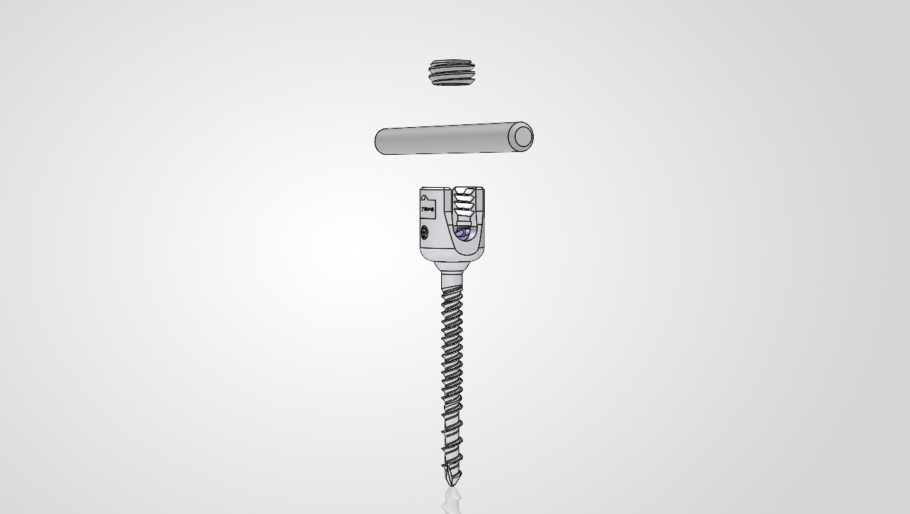
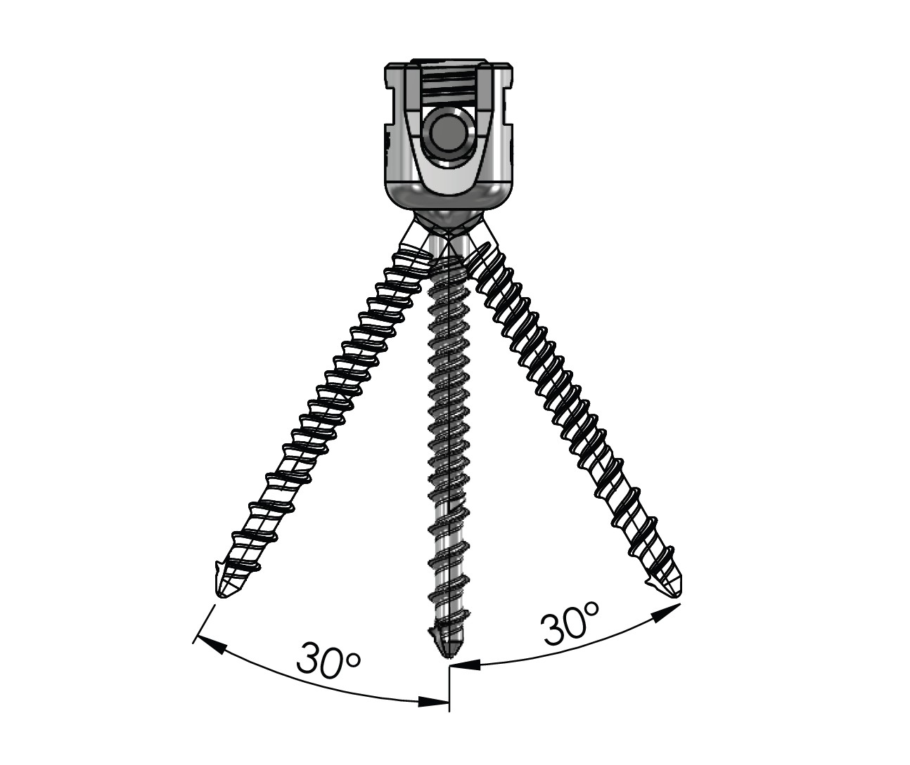
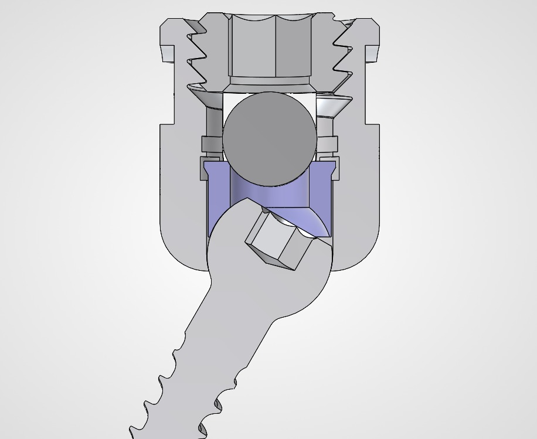
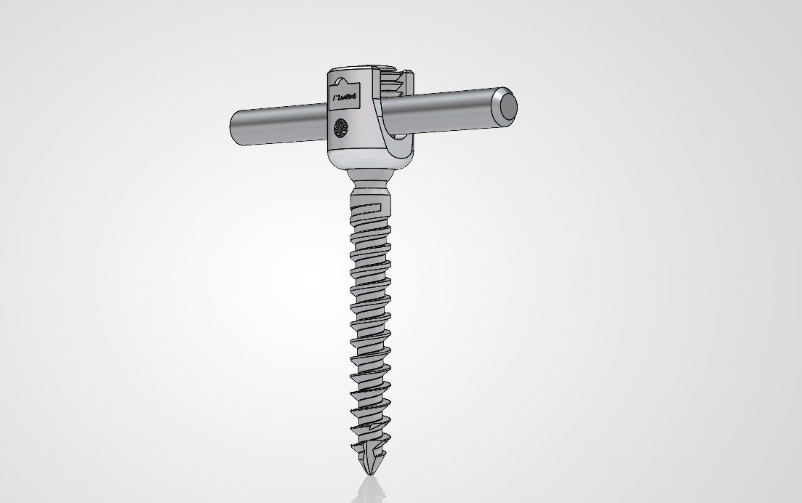
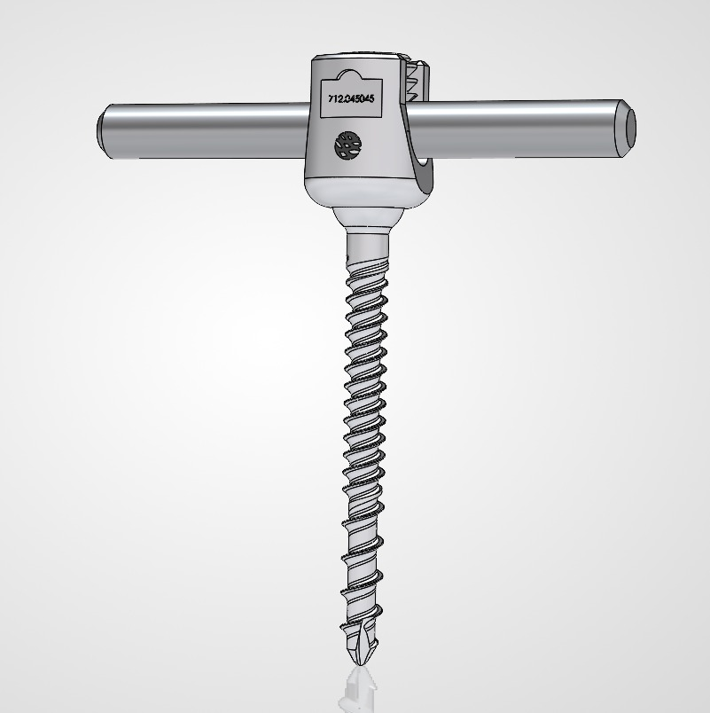

Mulai dari Kebutuhan,
Bukan dari Harga
Pedicle Screw System yang cost-effective, fleksibel secara konfigurasi, dan didukung oleh biological safety screening serta initial mechanical evidence yang relevan untuk evaluasi rumah sakit.
Sistem · Fitur · Evidence · Nilai Pengadaan
Tetapkan Intended Use
Sistem Secara Jelas
Evaluasi produk yang objektif dimulai dari memahami fungsi klinisnya.
Fungsi Utama
Stabilisasi dan fiksasi spinal posterior menggunakan konstruksi screw, rod, dan locking mechanism.
Sistem, Bukan Item
Yang dievaluasi bukan satu screw tunggal, melainkan bagaimana seluruh komponen bekerja sebagai konstruksi.
Dasar Evaluasi
Intended use yang jelas membuat diskusi procurement lebih terarah dan lebih objektif.
Relevan untuk Rumah Sakit
Produk ini dirancang untuk memenuhi kebutuhan stabilisasi spinal posterior dalam konteks klinis terstruktur.
Produk Ini Adalah
Sebuah System
Nilai sistem terletak pada integrasi komponen, bukan pada komponen tunggal.

Exploded view of pedicle screw system showing main assembly components
Degenerative Disorders
Kondisi degeneratif dengan kebutuhan stabilisasi yang jelas dan terstruktur.
* Indikasi final mengacu pada IFU, labeling, dan dokumen registrasi produk yang berlaku.
Deformities
Sistem berperan sebagai bagian dari konstruksi koreksi dan maintenance alignment.
* Indikasi final mengacu pada IFU, labeling, dan dokumen registrasi produk yang berlaku.
Kondisi Struktural Lain
Klasifikasi terpisah agar pembacaan indikasi tetap akurat dan kontekstual.
* Indikasi final mengacu pada IFU, labeling, dan dokumen registrasi produk yang berlaku.
Platform Produk
yang Berkembang
Rumah sakit tidak hanya membeli satu produk, tetapi menjalin kerja sama dengan platform sistem.
Posterior Fixation
Pedicle Screw System
Tersedia dalam opsi single-threaded dan double-threaded. Sistem fixation spinal posterior yang lengkap.
VBT Platform
Extension
Platform pedicle screw system untuk Vertebral Body Tethering — menunjukkan pengembangan lini sistem ke depan.
Platform yang berkembang menunjukkan bahwa kerja sama yang dibangun tidak berhenti pada satu produk dasar saja.
Ti-6Al-4V ELI
sebagai Material Utama
ELI
Extra Low Interstitials
Polyaxial Screw Head
untuk Fleksibilitas Alignment

Polyaxial angulation up to 60° total range (30° each side)
Ring Washer
sebagai Nilai Tambah Produk
Komponen internal yang menjadi pembeda teknis sistem ini.

Section view showing internal ring washer / insert inside screw head
System Assembly
dan Locking Concept
Sistem yang implementatif dimulai dari mekanisme assembly yang jelas.
Exploded system view showing rod introduction and locking sequence
Dua Opsi Konfigurasi
Thread Screw
Platform ini menyediakan dua opsi thread yang berbeda untuk kebutuhan konfigurasi yang lebih luas.

Single-threaded pedicle screw configuration in assembled view
Single-Threaded Option
Thread tunggal untuk konfigurasi standar. Tip design mendukung kemudahan inseri.

Double-threaded pedicle screw configuration in assembled view
Double-Threaded Option
Dual thread untuk purchase yang lebih luas. Memperluas fleksibilitas sistem.
Empat Nilai Utama
Sistem Ini
Inseri & Fixation Awal
Opsi single-threaded dan double-threaded. Geometri thread dirancang untuk mendukung kemudahan inseri dan fixation awal yang baik.
Sederhana & Praktis
Buttress thread, top-loading, tanpa cap tambahan. Dirancang untuk mendukung engagement yang stabil dan implementasi yang efisien.
Fleksibilitas Alignment
Low head profile, top loading, angulasi hingga 60° total. Membantu alignment di ruang terbatas dan mendukung pembentukan konstruksi.
Rod Compatibility Luas
Internal ring washer mendukung rod 5.5 mm dan 6.0 mm. Menambah fleksibilitas konfigurasi sistem secara keseluruhan.
Mengapa Biological Safety
Screening Penting?
Implant harus dievaluasi dari sisi keamanan biologis sebagai bagian dari penilaian produk yang bertanggung jawab.
Kategori Sampel
Implant device – tissue/bone. Kategori ini menentukan jenis dan cakupan pengujian yang relevan.
Durasi Kontak
Permanent contact (>30 hari). Durasi kontak menentukan tingkat pengujian biologis yang diperlukan.
Paket Pengujian Tersedia
Sitotoksisitas · Sensitisasi · Iritasi — tiga aspek biological safety screening yang sudah tersedia.
Posisi Data
Data ini diposisikan sebagai material/platform biological safety screening — dasar evaluasi awal yang tersedia.
Hasil Sitotoksisitas
di Atas Ambang Aman
Threshold potensi sitotoksik: viability < 70%. Semua hasil berada di atas ambang.
▼ Ambang sitotoksik: 70% viability
✓ Kesimpulan: tidak menunjukkan cytotoxicity reactivity pada kondisi uji
Kondisi uji: 0.20 g : 1 mL, 37 ± 1°C, 72 jam · MTT assay
Hasil Sensitisasi dan Iritasi
sebagai Safety Screening
Dua aspek biological safety lain yang tersedia sebagai bagian dari paket screening awal.
Data ini diposisikan sebagai bagian dari platform/material biological safety screening awal — bukan klaim absolut untuk seluruh konteks klinisnya.
Pullout Test sebagai
Initial Mechanical Evidence
Data mekanik yang tersedia saat ini adalah pullout / loading test berdasarkan ASTM F543.
Standar Pengujian
ASTM F543 — standar yang relevan untuk evaluasi awal karakteristik mekanik implant pedicle screw.
Apa yang Diukur
Gaya tarik maksimum sebelum screw tercabut dari media uji — pullout force sebagai indikator awal.
Posisi Data
Data ini dibaca sebagai initial mechanical evidence — bukan klaim bahwa seluruh biomechanical profile sistem telah lengkap.
Ukuran Tersedia
Data tersedia untuk ukuran 4.5 mm, 5.5 mm, dan 6.5 mm — ukuran utama dalam platform sistem.
Ringkasan Hasil Pullout
per Ukuran Screw
Beberapa ukuran utama sudah memiliki data mechanical yang terukur. Disampaikan secara proporsional sesuai scope evidence yang tersedia.
| Ukuran Screw | Maximum Load (kgf) | Keterangan |
|---|---|---|
| 4.5 mm | 243.4 – 270.1 kgf | + satu laporan lain: ~248.2 kgf |
| 5.5 mm | 243.8 – 289.7 kgf | — |
| 6.5 mm | 284.6 – 349.7 kgf | — |
Data diposisikan sebagai initial mechanical evidence · ASTM F543 · bukan perbandingan dengan kompetitor
Dari Data Teknis
ke Nilai Nyata bagi Procurement
Produk ini bukan sekadar efisiensi harga. Ada dasar teknis yang bisa dievaluasi secara objektif.
Fitur Sistem yang Relevan
Polyaxial head, ring washer, locking system, dan thread options — set fitur yang dirancang untuk kebutuhan klinis nyata.
Biological Safety Screening
Sitotoksisitas, sensitisasi, dan iritasi — paket screening awal yang sudah tersedia sebagai dasar evaluasi.
Initial Mechanical Evidence
Pullout data (ASTM F543) untuk ukuran 4.5, 5.5, dan 6.5 mm — data awal yang terukur dan dapat direferensikan.
Cost-effective & Evaluable
Bukan "produk murah". Produk ini cost-effective dengan basis teknis yang jelas — layak masuk proses evaluasi objektif.
Produk Ini Layak
Masuk Proses Evaluasi
Kami tidak meminta keputusan berdasarkan asumsi. Kami menawarkan dasar evaluasi yang logis, terukur, dan rendah risiko.
Intended use sudah jelas. Fitur sistem sudah dapat dijelaskan. Evidence awal sudah tersedia. Karena itu, langkah berikutnya yang paling rasional adalah membawa sistem ini ke proses evaluasi bersama tim klinis dan tim procurement.
Safety Screening
dengan Pullout Data
Sistem
Thread Screw